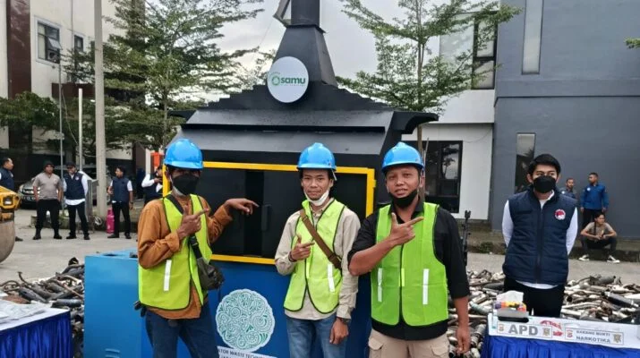

Industri Manufaktur
Optimalisasi Sistem Utilitas Pabrik
Penyusunan desain ulang dan implementasi perbaikan untuk sistem utilitas (air, udara tekan, dan steam) sehingga konsumsi energi lebih efisien.
Ringkasan proyek yang merepresentasikan pengalaman CME dalam mendampingi berbagai sektor industri, institusi, dan pemerintah.

Daftar berikut dapat disesuaikan dengan data aktual portofolio CME sebagaimana tercantum di dokumen company profile dan referensi proyek internal.
Penyusunan desain ulang dan implementasi perbaikan untuk sistem utilitas (air, udara tekan, dan steam) sehingga konsumsi energi lebih efisien.
Perancangan dan pelaksanaan sistem pengelolaan limbah padat dan cair di kawasan industri dengan target kepatuhan terhadap regulasi lingkungan yang berlaku.

Fabrikasi dan instalasi struktur baja untuk akses perawatan peralatan di area proses, lengkap dengan tangga, railing, dan pelindung.

Pembuatan komponen presisi untuk peralatan proses dengan toleransi ketat dan dokumentasi hasil pengujian.

Pendampingan teknis dalam peningkatan sistem penanganan limbah di fasilitas kesehatan agar selaras dengan standar terbaru.

Keterlibatan CME dalam proyek-proyek infrastruktur pendukung operasi untuk lembaga pemerintah atau BUMN (detail dapat disesuaikan dengan data aktual).
Jejak langkah nyata kami yang terekam dalam berbagai publikasi media, membuktikan dedikasi CME Engineering dalam memberikan solusi teknologi responsif dan solutif.
Ikuti perkembangan di media sosial kami.

Nama-nama klien utama, sektor, dan lama kerjasama dapat diambil langsung dari company profile atau daftar referensi proyek resmi CME.
Tim CME dapat menyiapkan contoh studi kasus yang paling mendekati kebutuhan Anda (anonim sesuai perjanjian dengan klien).